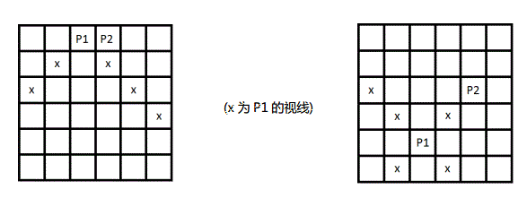

人的脑海中可以看做是2N? 2N的矩阵，操心术可以占领其中的单元格进行操控，每个单元格有一个重要度Wij。操
心术刚进入大脑时由两股力量组成一股位于(1,N)，一股位于(1, N+ 1)。当一股力量位于一个点时，可以操控视线
上的所有点，一个点只能操控一次。你可以移动力量的位置K次。一心不能二用，你一次只可以移动其中一股力量
到其视线中任意一点。视线的范围为力量所在点的两条斜线上的任意一个除自己以外其它点，特别的，如果斜线上
有另一股力量，则无法看到那股力量及其后面的所有格。

你要使得最后控制的单元格的重要度之和尽量大